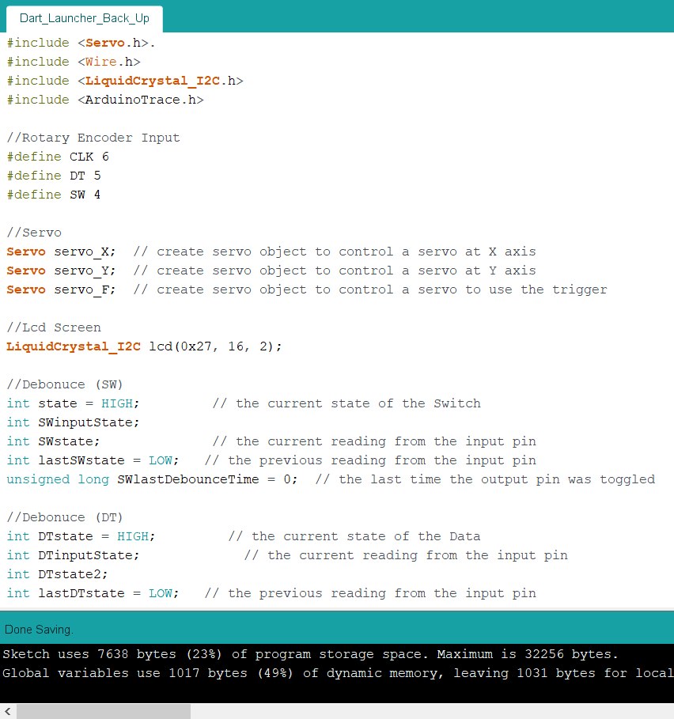
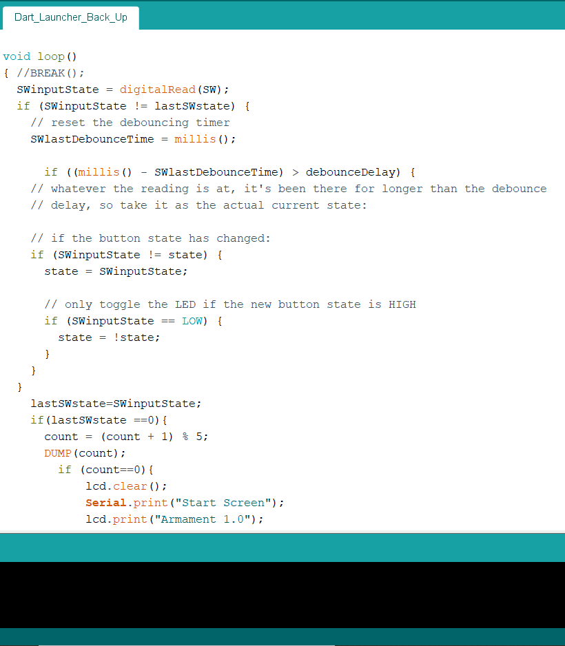
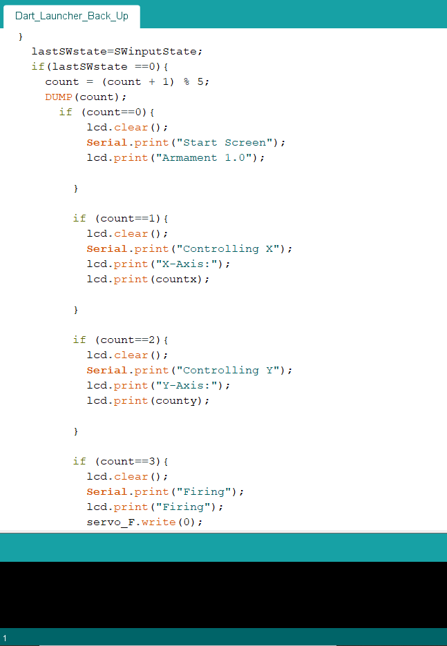
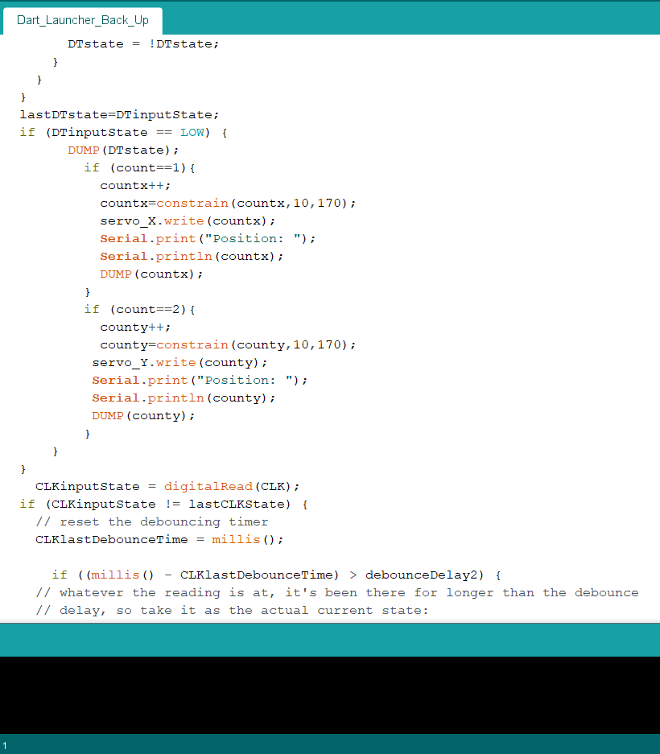

Project Title: CNC Router
Final Project
For my final project for EP1001, I chose to make a CNC router to challenge myself. Currently my home workshop only consist of a 3D printer and I want to expand it so I decied to make a CNC machine.
What does it do?
The CNC router will take G-code files I send from my laptop to the cut out designs onto whatever material I place on the board.
What are it's features?
The CNC router will use an ATmega328 PCB with GRBL which is an open source parallel-port-based motion control for CNC milling.
What will I make
| Process | Features |
|---|---|
| CAD Design, Graphics | I will use CAD to design the base, the mount for the turret and the turret of the launcher. |
| Laser cutting | I will laser cut the base of Launcher. |
| 3D Printing | I will 3D print a mount for the Launcher and the firing mechanism. |
| Micro-controller | I will be using an Arduino Uno to Control the Servo Motor |
| Input devices | Rotary Encoder |
| Output devices | 2 Servo Motor, X axis, Y axis for the Turret. LCD Display meant for displaying the Angle of the Motors. Solenoid used to push the dart through the firing mechanism. 2 DC motors will be used as well but they are not being controlled by the Arduino. |
Bill of materials
| Sn | Qty | Item Description | Approx Cost |
|---|---|---|---|
| 1 | 2 | 180 TowerPro High Torque MG995 | $7.70 |
| 2 | 1 | Degrees Rotary Encoder Link: https://tinyurl.com/yx9ymvx9 | $1.07 |
| 3 | 1 | LCD Screen | Fablab |
| 4 | 1 | SG90 Mirco Servo | $12.00 |
| 5 | 2 | 6V DC motors | $6.00 |
Documentation:
Overview: I came up with serveral design ideas on how I should design my sentry gun. It needs room to house an Lcd Screen to display the angle of the servo motor, a rotary encoder to control the entire machine, an Arduino and a breadboard. I will need to be able to use 180 Servo Motor to move both the X and Y axis since they can hold their position. Lastly, I need the most important feature, the mechanism used to fire the dart. Ideally, I want it to be able to fire more than 1 bullet before it needs to be reloaded. This is because I find it it irritating if this launcher can only fire a single round before needing to be reloaded.
Research:
| Firing mechanism | Explaination |
|---|---|
|
The image shown shows a homemade nerf blaster that uses air to fire a dart. Using a Air Drain Blaster, which is a tool used to clean drains by pumping and compressing the air which is then used to clear a drain by delivering a force of compressed air to push the debris. The same logic can be applied to fire a Nerf dart as well. |
|
|
While researching on firing mechanism for nerf guns, I decided to dismantle my own nerf guns to see how they worked. This Nerf gun uses compressed air as well. However, instead of pumping the gun, you instead pull back on a small 'plunger' which lock itself and compressed the spring. It also fills the tube it was in with air. Once the trigger is pulled, it releases the lock, the weight of the spring pushes the plunger back into the stube. This rapidly compresses the air inside it sending the dart flying. |
|
|
This nerf gun uses 'Flywheels' not compressed air. These nerf guns also don't require any form of pumping or pull back action in order for it to work. Using 2 motors spining in opposites directions called a , "Flywheel", when the user pulls the trigger it pushes the dart fowards into the 'flywheels' which send the dart forward. This is mostly used with magazines since they can hold more bullets. |
Research Conclusion:
In Conclusion, I will be incorporating the 'Flywheel' firing mechanism into my design. The Flywheel allows me to use nerf magzines for my design which will allow me to fire more than one dart before reloading. Theoretically, the other mechanism could also fire more than 1 shot before needing to be reloaded. However, in order for it to be automatic, I would either need to find a way to get an air compressor or use a motor to pull back a spring. I am unfamiliar with creating a system that allows me to use compressed air to push the dart and it is difficult for a motor to pull back a spring that is used in nerf blasters since they have about 2 kg worth of strength which is difficult for a small motor to pull. Flywheels on the other hand uses 2 dc motors and something to push the dart, I could use a servo motor to act as the "Trigger" to push the dart and I know how to wire the motors up as well.
Design Sketches:
| Design | Explaination |
|---|---|
|
Design 1 is the first idea that popped into my head when thinking of a design. It has a circular base which allows me to house the LCD, Arduino, Rotary Encoder and a rocker switch. I had the idea to include a rocker switch into my design as I figure some sort of "Safety" just like in firearms might be interesting. It also means I would not need to use a Motor Driver to drive the motors since they would connected directly from the battery. The Rocker Switch allows the User to control the when the motors are used, as they tend to get noisy when running. |
|
|
Design 2 is sort of tiny improvement to Design 1. The area of the base is bigger, since it is a sqaure. Most importantly, it wil be easier to fabricate since I have no idea how to make a curved surface. |
|
|
Design 3 uses a pyramid for its base. This is allow the LCD screen, rotary encoders and rocker switch to face the user. This should make it more easier to look at the screen. The Turrent of the gun is also slim down this is to prevent the possibility of the servo motor not being able to handle the stress of the gun and other servo motor. |
Design Sketch Conclusion:
In Conclusion, I will be using design 2. Although design 3 might be more appealing, the time constraint I have on this project means that I should try to go for a faster fabrication, since I will have to work on the code as well. Since design 2 is just a more ideal version of design 1, I chose to use it. In addition, it was suggested that we make a mock up of our design using cardboard. However, due to a lack of time, I have deceided not to do it.
Creating a CAD MODEL
| Sketch | Explaination |
|---|---|
|
The Design Consist of 3 different parts. Each labelled in the sketch, the Base, where the arduino and all other eletronics are stored. The Turret which holds the Gun, and the Gun which houses the flwheels. magazine and pusher. |
| Cad model progress | Explaination |
|---|---|
|
I first started by creating a box similiar to the music box, creating 6 sides and adding teeth to them. I changed the length of the base a few times, going from 140 mm to 190mm and settling on 220 mm. This is to give me enough room to fit my arduino, breadboard, etc. As well as give me spare room for wiring, since it will be move constantly, I was afraid that the wires would be strached too thin so I figured, to prevent that I should give myself more room to work with. |
|
|
With the base roughly completed, I used construction lines to map out the rough dimensions of how I want the turrent to move. I then imported a step file of the servo motor I would be using and created a hole for it. It is at this point, I decided to make it out of wood. This is so I can easily make modifications to my design like filing off pieces I don't need. |
|
|
I made the turrent which would hold the gun, following my sketechs. I set it so it has a length of 140 mm which would give me 80 mm of space to add the LCD screen and other stuff. |
|
|
I added the hole for my servo motor using similiar dimensions. |
|
|
I added the hole for my servo motor using similiar dimensions. |
|
|
At this point, I realised I need to create something that would allow for me to move the gun smoothly up and down. However if I created a wheel of sorts then friction would rub against it and the motor which will damage both of them. I decided to purchase a ball bearing to solve this issue. It is 26mm so I creaeted a hole to fit it. |
|
|
With the hole created, I created a model similiar to the ball bearing I used and placed it into the turrent. |
|
|
I followed it up by creating a rod to act as the plaform for the gun. Since it needed a flat surface to lay on. |
|
|
I extended the surface of the plaform to mount the gun. I went with 140 mm lenght and 80 mm width. Since the nerf magazines itself is around 80mm long, so I had to add additional room for the flywheels and pusher. |
|
|
With the Turret done, I added the holes used for the LCD, rotary encoder and rocker swtich. |
|
 |
I created an additonal plane, this would act as the connecting piece between my turret and gun. |
|
I imported the cad model of a flywheel cage from grabcad.com and aligned the barrel with the centre of the piece. |
|
|
I then created the slots of the magazine holder. |
|
|
Once the slots are created, I made the holder. |
|
|
Then I created a 17mm cross. Based on measuring a nerf dart, this ousher has a bigger diameter than the dart which can allow me to push it easily. I used a cross pattern as since it will be able to move more closely along the path I made for it. |
|
|
I add a servo motor mount and then connected the two together. |
|
|
I created a box around the gun. |
|
 |
Since there is still some extra room left in front of the flywheel, I added a barrel to guide the bullet. |
|
Since there is still some extra room left in front of the flywheel, I added a barrel to guide the bullet. |
|
After finishing the gun, I reattach it to the base. In Conclusion, you should double check your orientation of your Cad model. Since I did not check, my model has a slight error where the gun faces the user. The Cad model for these files can be found in my github site, along with the DXF files used for laser cutting. |
Coding:
| Example | Explaination |
|---|---|
|  |
To begin coding, I need to explain the different libraries I used and what purpose they serve.
Since I am using a rotary encoder, I would have to define which pins it uses so the arduino knows which pin to get the data from.
|
|
The 'Debounce' part is used in my programe to prevent the rotary encoder from giving inconsistent results. |
|
 |
As shown with this gif, without adding Debounce, the rotary encoder gives inconsistent results. |
|  | This is what the rest of the debounce code looks like and I would repeat it for the both DT and CLK. |
|  | This part of my code shows the different screens the LCD will display. To show the different state the launcher was in. 0 being the value when the launcher starts up. 1 being the state where you control the X axis. 2 for the Y axis. 3 tells the servo pusher to push the dart. 4 retracts the servo to its original postition. |
|  | This is the part where the moving clockwise on the rotary encoder changes the angle. This part increases the angle. I set it to 10 and 170 as the servo motor has some issues going from 0 to 180. |
This part is simliar to the perivous picture. However it decreases the angle instead. |
Fabrication
While fabricating the different piece of the dart launcher, I decided to make some changes to the original design.
- I addded a "tray"
- I decided not to laser cut the housing around the dart launcher
- I had to increase the height of the magazine holder
| Image | Explaination |
|---|---|
| The Original idea for to add a tray was to allow me to get and easier access to my wiring and electronic compoents once I assmeble the base. Since I would not have to remove the turret and gun just to check or modify the wiring. However, due to my ignorance, when I later began testing if all of the compoents fit, I realised the push button and LCD was preventing the base from closing as it was hitting the tray. | |
| The main issue that stem when adding a tray is the dimension I used for it. I did not leave any tolerance. This meant that it was a perfect fit which caused it to has trouble opening. I had to use a file and file down the tray to give me some wiggle room to properly use it. This did not solve the problem but it was a small patch to an issue. I would later saw off the wall as it was getting in my way from wiring. | |
| I decided not to fabricate the hosuing for the dart launcher as my preivous design for the pusher was too big. It wasn't able to push it dart. So I had to extend it by an addtional 20mm for it to work. I also shaved off 4 mm from the top to allow the other darts in the magazine to feed in better. This resulted in the pusher being too big and I could either redesign the house and fabricate or just leave it without the housing. As I was running out of time I deceided not to create the housing as I felt that it would just only added to the weight of the launcher. | |
| I discovered I misjudge the height of the magazine and thus the pusher had difficult feeding as the dart would always hit the edge of the flywheel cage instead of going into the hole. Therefore, I creaeted several rectangles with the same lenght and breath as the magazine using 3 mm plywood. | |
| Since I was about 9mm off. I fabriacted 3 of them and glued them together before pasting them onto the top the of the magazine holder to extend the height. | |
| With the modified height, the magazine is now a lined with the flywheel. |
Intergration
Intergration became one of the hardest part of my project. This is due to my changes in design during fabrication affecting my previous design which I did not account for. This resulted in me spending my time to modify existing pieces to get it to work together.
| Image | Explaination |
|---|---|
| Due to how short the wires I was using are, it was very difficult to wire it all up as I had very little room to work with. The dimension of the tray also played an annoying role here. As I realised while assembling it, the walls of the tray was pushing against the rotary encoder, rocker swtich and LCD. I had to saw off parts of the tray to make room and that created more issues as I already screwed the ardiuno to the board and glued the breadboard. Needless to say, I got it done but I had used up too much of my time. | |
 |
Additionally, I had a wiring issue with the motors where they would reset the arduino when I acitvated them. In order to prevent this from happening, I would have to increase the current flowing through the circuit. |
 |
Testing the Servo's ability to control the turret. The movement was bit janky as there was a small delay between the rotary moving and the servo moving. |
 |
Testing the Servo's ability to push the bullet from the magazine |
| Testing if the flywheel mechanism work. The dart launcher fires the dart. Although the flywheel system was very large. | |
 |
Once Fully tested and assembled, I tested if the launcher worked with when moving the X axis. Unfortunatly, it the Y axis servo isn't able to grip on to the launcher. |
| As a temporary fix, I hotglued the mount to the servo. This caused a bigger issue. As the mount was unable to move since the Y axis motor becamed jammed with hotglue. I wasn't able to attach it to the servo horn as the additional lenght will cause the ball bearing to not fix into the slot I made for it. | |
 |
As I was cleaning up the hotglue from the servo motor, I made a realisation, that I could fit the dart launcher with a servo horn if I attach the screw hole of the sevo motor behind the wall. |
 |
To implement this fix, I screwed the servo horn on to the servo to increase its grip. With the addition size of the screw, I fitted it into the mount and hotglue it together. The picture shows my final result. |
| With everything attach together, it now works ! |
Preview
| Test Fire | Firing a full 6 shot magazine |
|---|---|
Reflection

After finish assembling the nerf dart launcher I learnt I alot of valuable advice. The lack of proper time management was one of them, this was due to my indecision to modify my base to add a plate. The change cost my more time asI had to readjust the placement of all the componets. and when it all still didn't fit, I had to modify the tray itself which took up more time then I indeed and planned for. In summary:
- Creating a cardboard Mock up of your idea usually helps. This gives you a general sense of how your product is going to look like and you can make any modifications easily as it is cardboard.
- Only change your design when you need to. I already had the base fabriacted and it whave worked with all the compoents put in place. Yet I thought a tray would be better and conviced myself so. In the end I paid the price for it as I had to deal with the unintended consequences of it. Which cost me tons of my valuable time.
Additional changes I would have made:
- Creating a smaller turrent mount for the launcher. This reduces the overall weight on the servo. Which might allow it to move better.
- Minimzing the launcher. Although I found out that the launcher was larger than it was suppose to be. It could be much more thinner, as I hard a alot of spare room in the housing.
In Conclusion, I have learnt alot from this project helping boost my personal experience. I enjoyed this module as I always loved to make stuff and this inspired to try doing more of it in my free time. Although my project isn't 100% what it was at the start, I believe that it gave my a better understanding myself and teach me an important lesson on both Design and Fabrication.